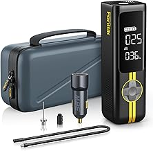
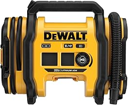
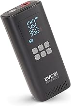
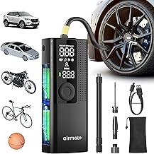
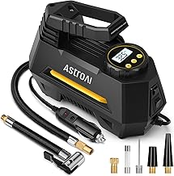

This page focuses on the simple process that prevents overheated compressors and overinflated tires, so the recommendations favor the buyers most likely to care about that use case instead of generic one-size-fits-all advice.
See Main RankingsWe compare real products, not imaginary winners. Every Amazon link uses affiliate tag brazenprodu01-20, which helps keep the site running at no extra cost to you.

⭐ 4.6 · $73.99
Fast digital inflator with a clean display and good heat control. Built for shoppers researching the simple process that prevents overheated compressors and overinflated tires rather than the whole category at once.

⭐ 4.6 · $130.22
Workshop-grade versatility with 12V, 20V, and inflation presets. Built for shoppers researching the simple process that prevents overheated compressors and overinflated tires rather than the whole category at once.

⭐ 4.6 · $76.26
A classic corded compressor for drivers who want reliable airflow over flashy features. Built for shoppers researching the simple process that prevents overheated compressors and overinflated tires rather than the whole category at once.

⭐ 4.3 · $59.49
Simple cordless inflator for commuter cars and emergency kits. Built for shoppers researching the simple process that prevents overheated compressors and overinflated tires rather than the whole category at once.

⭐ 4.5 · $27.17
Affordable digital compressor with clear controls and useful accessories. Built for shoppers researching the simple process that prevents overheated compressors and overinflated tires rather than the whole category at once.
| Product | Positioning | Why It Stands Out |
|---|---|---|
| Fanttik X8 Apex | Budget | Fast digital inflator with a clean display and good heat control. |
| DEWALT 20V MAX Tire Inflator DCC020IB | Mid-Range | Workshop-grade versatility with 12V, 20V, and inflation presets. |
| VIAIR 88P | Mid-Range | A classic corded compressor for drivers who want reliable airflow over |
| Airmoto Portable Tire Inflator | Premium | Simple cordless inflator for commuter cars and emergency kits. |
| AstroAI Portable Air Compressor | Premium | Affordable digital compressor with clear controls and useful accessori |
When comparing tire inflators, ignore lazy ranking pages that only repeat spec sheets. Start with your actual use case: the simple process that prevents overheated compressors and overinflated tires. That one detail usually determines whether compact convenience, stronger output, or premium features matter most.
Next, look at ownership friction. The right product is the one you will keep using, cleaning, storing, and recommending six months from now. That means build quality, support reputation, and ease of use matter more than marketing claims.
Finally, buy enough quality once. The cheapest option often becomes expensive when it disappoints early, while the most expensive option is only worth it if its advantages actually show up in your real routine.
Preset accuracy and usable airflow matter more than inflated max PSI claims. For normal cars and SUVs, an inflator that comfortably reaches 40 to 50 PSI with reasonable speed is enough.
Some are, but not all. For truck tires, larger batteries, better heat control, and more airflow make a real difference.
Check the duty cycle. Many portable units need cooling breaks after several minutes, especially when inflating larger tires from low pressure.
Buy 12V if you want sustained power and battery if you value convenience. Many drivers keep a cordless inflator for top-offs and a stronger corded unit for harder jobs.
Not really. Portable inflators are for tire maintenance and emergencies, while shop compressors are better for air tools and faster repeated inflation.
Good ones are close enough for everyday use, but a separate gauge is still smart if you care about precision or you are airing up after off-road driving.